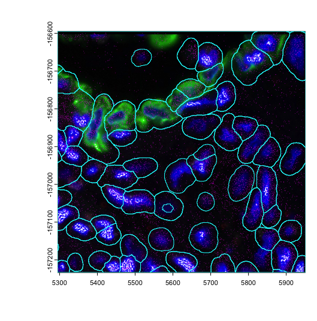
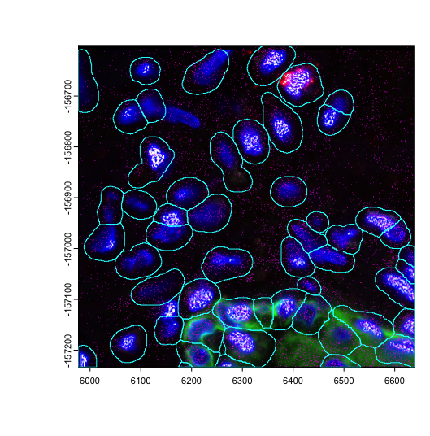
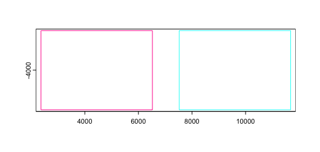
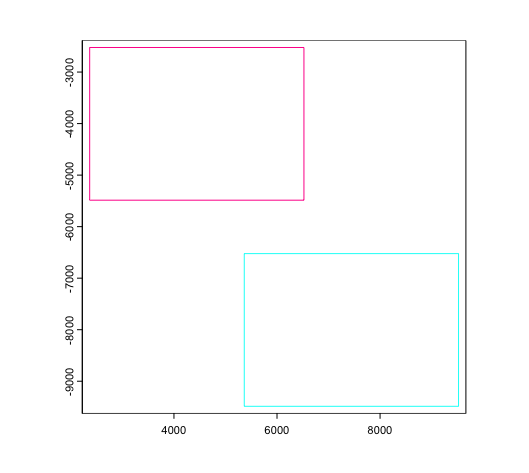
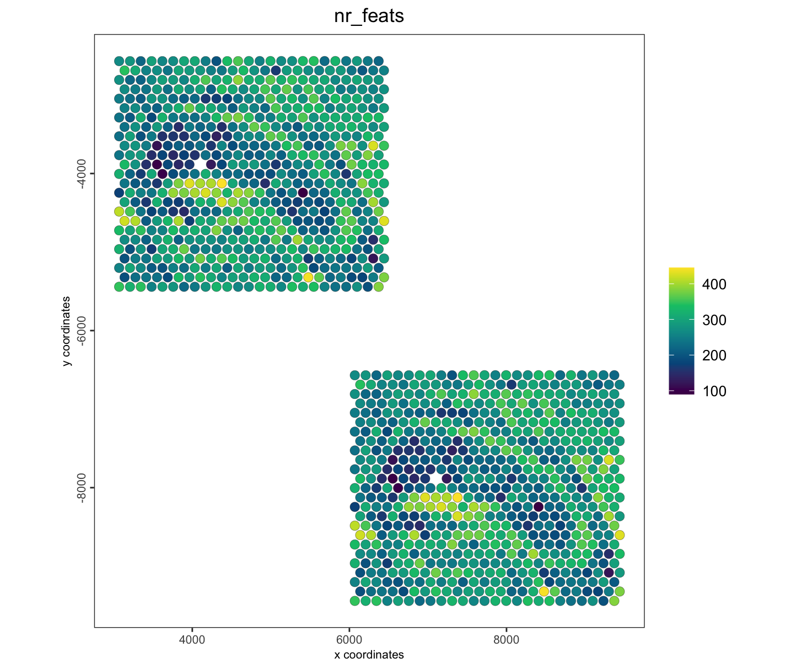
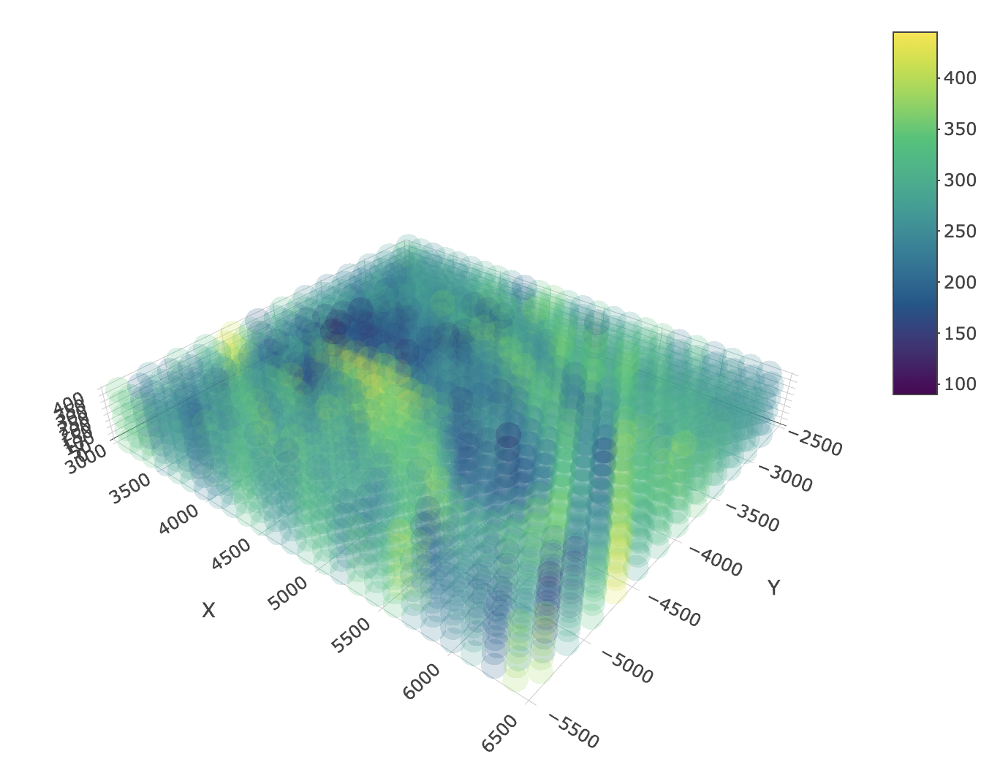
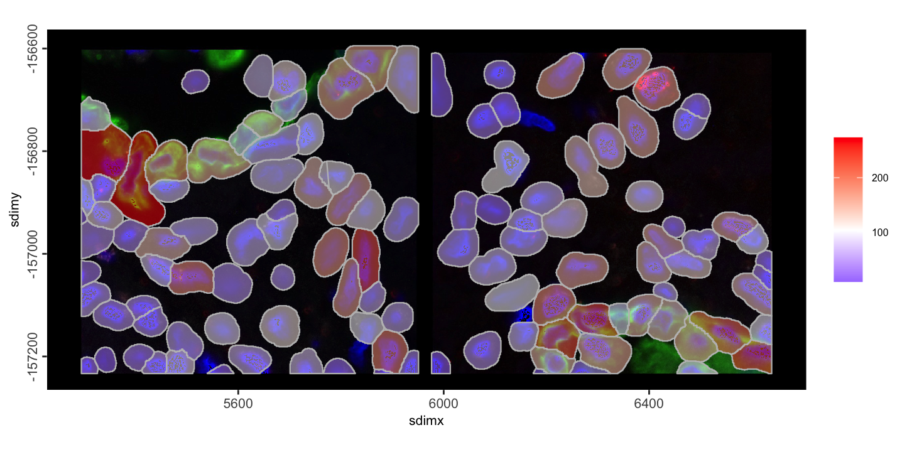

splitGiotto() and joinGiottoObjects() are
how Giotto works with multiple samples.
-
splitGiotto()- separate a singlegiottoobject into a list of several based on a cell metadata column -
joinGiottoObjects()- combine a list of multiplegiottoobjects into a singlegiottoobject.
An example set of FOVs from the lung 12 sample of the CosMx SMI NSCLC FFPE dataset and a mini dataset from a 10X visium mouse brain dataset will be used for this tutorial.
1 Check Giotto installation
# Ensure Giotto Suite is installed.
if(!"Giotto" %in% installed.packages()) {
pak::pkg_install("giotto-suite/Giotto")
}
# Ensure Giotto Suite is installed.
if(!"GiottoData" %in% installed.packages()) {
pak::pkg_install("giotto-suite/GiottoData")
}
# Ensure the Python environment for Giotto has been installed.
genv_exists <- Giotto::checkGiottoEnvironment()
if(!genv_exists){
# The following command need only be run once to install the Giotto environment.
Giotto::installGiottoEnvironment()
}
library(Giotto)2 Load in Data
For the first sets of examples we load a mini visium object from
GiottoData in as g .
g <- GiottoData::loadGiottoMini("visium")Next, two Nanostring CosMx FOVs will be loaded in from
GiottoData example files as giotto objects called
a and b.
This is from an edited mini dataset, and some parts of loading and object creation should not be taken as guidance so the steps will be hidden by default.
For information on how to load in a standard CosMx dataset, see the Nanostring CosMx section under the Examples tab, or the giotto object creation tutorial for general instructions.
Load in a and b giotto objects
Dataset Paths
gdata_cosmx_dir <- system.file(package = "GiottoData", file.path("Mini_datasets", "CosMx", "Raw"))
tx_path <- file.path(gdata_cosmx_dir, "Lung12_tx_file.csv")
bounds_paths <- list.files(file.path(gdata_cosmx_dir, "CellLabels"), full.names = TRUE)
img_paths <- list.files(file.path(gdata_cosmx_dir, "CellComposite"), pattern = "jpg$", full.names = TRUE)Data Loading
# load transcripts
tx_dt <- data.table::fread(tx_path)
tx <- split(tx_dt, tx_dt$fov) |> setNames(c("a", "b"))
gpoints_a <- createGiottoPoints(tx$a, feat_type = c("rna", "NegPrb"), split_keyword = list(c("NegPrb")))
gpoints_b <- createGiottoPoints(tx$b, feat_type = c("rna", "NegPrb"), split_keyword = list(c("NegPrb")))
# load polys from mask
gpoly_a <- createGiottoPolygon(bounds_paths[[1L]], remove_background_polygon = TRUE)
gpoly_b <- createGiottoPolygon(bounds_paths[[2L]], remove_background_polygon = TRUE)
# load images
img_a <- createGiottoLargeImage(img_paths[[1]])
img_b <- createGiottoLargeImage(img_paths[[2]])
# adjust polys and images to match points extent
# *********************************************************************************
# setting all extents based on points info is an approximation and generally
# not the right way to align the objects since more accurate values are usually
# provided. We do this here for expediency to put together an example object.
# *********************************************************************************
ext(img_a) <- ext(gpoly_a) <- ext(gpoints_a$rna)
ext(img_b) <- ext(gpoly_b) <- ext(gpoints_b$rna)Check Spatial Alignment
plot(img_a)
plot(gpoints_a$rna, col = "magenta", raster = FALSE, add = TRUE)
plot(gpoly_a, border = "cyan", add = TRUE)
plot(img_b)
plot(gpoints_b$rna, col = "magenta", raster = FALSE, add = TRUE)
plot(gpoly_b, border = "cyan", add = TRUE)
Objects Creation
a <- b <- giotto()
a <- a |>
setGiotto(gpoints_a) |>
setGiotto(gpoly_a) |>
setGiotto(img_a) |>
addSpatialCentroidLocations() |>
calculateOverlap() |>
overlapToMatrix()
b <- b |>
setGiotto(gpoints_b) |>
setGiotto(gpoly_b) |>
setGiotto(img_b) |>
addSpatialCentroidLocations() |>
calculateOverlap() |>
overlapToMatrix()
# filter and norm skipped since these objects will be joined anyways.3 Join Giotto Objects
Multiple giotto objects can be combined into a single
one through joinGiottoObjects(). This requires both the
list of giotto objects and a list of names to assign those
objects in the joined object. The operation updates the cell IDs used
throughout the object so that they are disambiguated from possibly
similar cell IDs in other objects. A new column (called “list_ID” by
default) is also added to the cell metadata to help differentiate
between samples.
Since Giotto primarily handles spatial data, the object joining operations also allow customization of how the spatial joining is performed.
3.1 Join with shift (default)
The default join method is to apply a spatial x padding of 1000, so
that spatial data does not accidentally overlap each other and become
hard to tell apart between samples. dry_run = TRUE can be
set in order to get a preview of how the datasets will be spatially
positioned relative to each other in 2D join operations.
joinGiottoObjects(
list(g, g),
gobject_names = c("g1", "g2"),
dry_run = TRUE
)
Alternative positionings can be set by supplying vectors of numerical
values to x_shift and y_shift params.
joinGiottoObjects(
list(g, g),
gobject_names = c("g1", "g2"),
x_shift = c(0, 3000),
y_shift = c(0, -4000),
dry_run = TRUE
)
j_shift <- joinGiottoObjects(
list(g, g),
gobject_names = c("g1", "g2"),
x_shift = c(0, 3000),
y_shift = c(0, -4000),
dry_run = FALSE
)
spatPlot2D(j_shift,
cell_color = "nr_feats",
gradient_style = "sequential",
color_as_factor = FALSE
)
3.2 Join with Z-stack
Spatial datasets are often generated in slices. If multiple datasets were generated from sequential slices of the same or very similar tissue, after spatial alignment/registration, it can be helpful to stack them on the Z axis to generate a 3D volume to analyze.
This stacking can be performed during the object joining operation. Here we show an example of this with the example visium
j_stack <- joinGiottoObjects(
list(g, g, g, g, g),
gobject_names = sprintf("obj_%d", seq(5)),
join_method = c("z_stack"),
z_vals = 100
)
spatPlot3D(j_stack,
cell_color = "nr_feats",
color_as_factor = FALSE,
gradient_style = "sequential",
point_alpha = 0.2,
point_size = 10,
axis_scale = "real"
)
The above uses 100 as the stepwise distance between all stacks, but z positioning can be customized by providing a specific numerical z value for each slice to add.
3.3 Join with no change
The CosMx mini dataset loaded in previously as a and
b are already spatially located in the correct locations
relative to each other. For these cases, we can join the objects with
join_method = "no_change"
join_nc <- joinGiottoObjects(
list(a, b),
gobject_names = sprintf("fov_%d", seq(2)),
join_method = "no_change"
) |>
# also perform some other steps so we have values to plot
filterGiotto(
expression_threshold = 1,
feat_det_in_min_cells = 2,
min_det_feats_per_cell = 5
) |>
normalizeGiotto() |>
addStatistics()
spatInSituPlotPoints(join_nc,
polygon_fill = "nr_feats",
polygon_fill_as_factor = FALSE,
show_image = TRUE,
image_name = c("fov_1-image", "fov_2-image")
)
4 Split Giotto Object
The reverse can also be done. A split operation will split a single
giotto object into a list of several based on a cell
metadata column defined by the by param. This can be
helpful for splitting apart samples again or examining all subsets of a
categorical variable within a dataset such as cell type.
Do note however, that this will not reverse the naming changes applied to the cell IDs.
glist <- splitGiotto(join_nc, by = "list_ID")
force(glist)$fov_1
An object of class giotto
>Active spat_unit: cell
>Active feat_type: rna
dimensions : 958, 64 (features, cells)
[SUBCELLULAR INFO]
polygons : cell
features : rna NegPrb
[AGGREGATE INFO]
expression -----------------------
[cell][rna] raw normalized scaled
spatial locations ----------------
[cell] raw
attached images ------------------
images : fov_1-image fov_2-image
Use objHistory() to see steps and params used
$fov_2
An object of class giotto
>Active spat_unit: cell
>Active feat_type: rna
dimensions : 958, 53 (features, cells)
[SUBCELLULAR INFO]
polygons : cell
features : rna NegPrb
[AGGREGATE INFO]
expression -----------------------
[cell][rna] raw normalized scaled
spatial locations ----------------
[cell] raw
attached images ------------------
images : fov_1-image fov_2-image
Use objHistory() to see steps and params used5 Session Info
R version 4.4.1 (2024-06-14)
Platform: aarch64-apple-darwin20
Running under: macOS 15.0.1
Matrix products: default
BLAS: /System/Library/Frameworks/Accelerate.framework/Versions/A/Frameworks/vecLib.framework/Versions/A/libBLAS.dylib
LAPACK: /Library/Frameworks/R.framework/Versions/4.4-arm64/Resources/lib/libRlapack.dylib; LAPACK version 3.12.0
locale:
[1] en_US.UTF-8/en_US.UTF-8/en_US.UTF-8/C/en_US.UTF-8/en_US.UTF-8
time zone: America/New_York
tzcode source: internal
attached base packages:
[1] stats graphics grDevices utils datasets methods base
other attached packages:
[1] Giotto_4.1.5 GiottoClass_0.4.3
loaded via a namespace (and not attached):
[1] tidyselect_1.2.1 viridisLite_0.4.2 dplyr_1.1.4
[4] farver_2.1.2 GiottoVisuals_0.2.8 fastmap_1.2.0
[7] SingleCellExperiment_1.26.0 lazyeval_0.2.2 digest_0.6.37
[10] lifecycle_1.0.4 terra_1.7-78 magrittr_2.0.3
[13] compiler_4.4.1 rlang_1.1.4 tools_4.4.1
[16] yaml_2.3.10 igraph_2.1.1 utf8_1.2.4
[19] data.table_1.16.2 knitr_1.48 S4Arrays_1.4.0
[22] labeling_0.4.3 htmlwidgets_1.6.4 reticulate_1.39.0
[25] DelayedArray_0.30.0 RColorBrewer_1.1-3 abind_1.4-8
[28] withr_3.0.1 purrr_1.0.2 BiocGenerics_0.50.0
[31] grid_4.4.1 stats4_4.4.1 fansi_1.0.6
[34] colorspace_2.1-1 ggplot2_3.5.1 scales_1.3.0
[37] gtools_3.9.5 SummarizedExperiment_1.34.0 cli_3.6.3
[40] rmarkdown_2.28 crayon_1.5.3 generics_0.1.3
[43] rstudioapi_0.16.0 httr_1.4.7 rjson_0.2.21
[46] zlibbioc_1.50.0 parallel_4.4.1 XVector_0.44.0
[49] matrixStats_1.4.1 vctrs_0.6.5 Matrix_1.7-0
[52] jsonlite_1.8.9 GiottoData_0.2.15 IRanges_2.38.0
[55] S4Vectors_0.42.0 ggrepel_0.9.6 scattermore_1.2
[58] crosstalk_1.2.1 magick_2.8.5 GiottoUtils_0.2.1
[61] plotly_4.10.4 tidyr_1.3.1 glue_1.8.0
[64] codetools_0.2-20 cowplot_1.1.3 gtable_0.3.5
[67] GenomeInfoDb_1.40.0 GenomicRanges_1.56.0 UCSC.utils_1.0.0
[70] munsell_0.5.1 tibble_3.2.1 pillar_1.9.0
[73] htmltools_0.5.8.1 GenomeInfoDbData_1.2.12 R6_2.5.1
[76] evaluate_1.0.0 lattice_0.22-6 Biobase_2.64.0
[79] png_0.1-8 backports_1.5.0 SpatialExperiment_1.14.0
[82] Rcpp_1.0.13 SparseArray_1.4.1 checkmate_2.3.2
[85] colorRamp2_0.1.0 xfun_0.47 MatrixGenerics_1.16.0
[88] pkgconfig_2.0.3